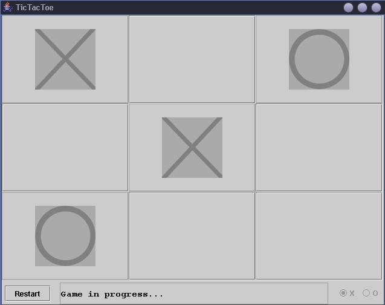

Tic Tac Toe
Program Description
This little application emulates a game of Tic Tac Toe. It was a rudimentary exercise in java GUI creation.
It is fully playable by the user, but the computer AI is not very advanced, so it is very easy to win.
Features
Sample Run
